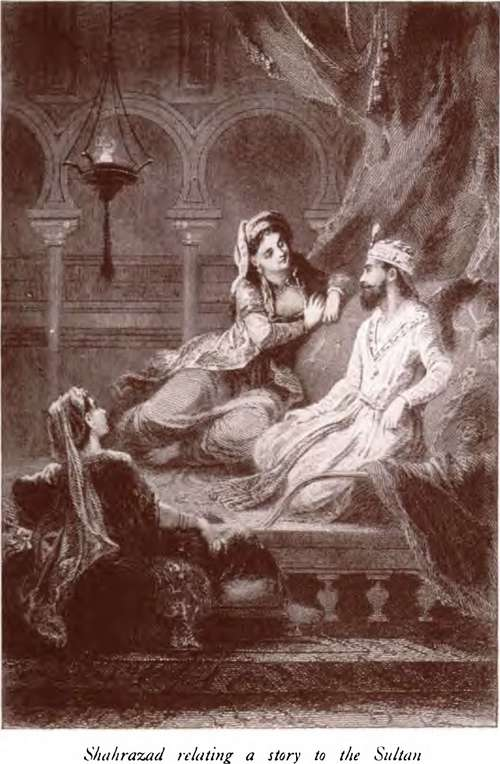
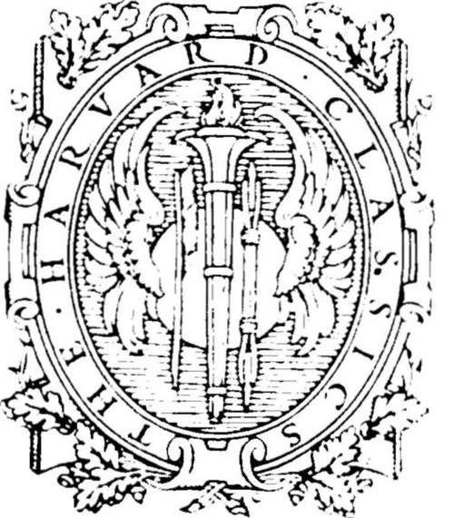

Stories From The Thousand And One Nights | by Edward William Lane and Stanley Lanepoole
The Thousand and One Nights is one of the great story-books of the world. It was introduced to European readers by the French scholar Galland, who discovered the Arabic original and translated it into French in the first decade of the eighteenth century; but its earlier history is still involved in obscurity.
| Title | Stories From The Thousand And One Nights |
| Author | Edward William Lane and Stanley Lanepoole |
| Publisher | P F Collier & Son Company |
| Year | 1909 |
| Copyright | 1909, P F Collier & Son Company |
| Amazon | Stories From Thousand And One Nights: The Arabian Nights' Entertainments |
(The Arabian Nights' Entertainments)
The Harvard Classics
Edited By Charles W Eliot Ll D
Translated By Edward William Lane
Revised By Stanley Lanepoole
P F Collier & Son Company
 Introductory Note
Introductory Note- There existed as early as the tenth century of our era a Persian collection of a thousand tales, enclosed in a framework which is practically the one used in the present collection, telling of a King ...
- Introduction
- In the name of God, the Compassionate, the Merciful Praise be to God. the Beneficent King, the Creator of the universe, who hath raised the heavens without pillars, and spread out the earth as a bed; ...
- Introduction. Part 2
- Now there were some windows in the King's palace commanding a view of his garden; and while his brother was looking out from one of these, a door of the palace was opened, and there came forth from it...
- Introduction. Part 3
- Never trust in women; nor rely upon their vows, For their pleasure and displeasure depend upon their passions. They offer a false affection; for perfidy lurks within their clothing. By the tale of ...
- Introduction. Part 4
- Now he had a cock, with fifty hens under him, and he had also a dog; and he heard the dog call to the cock, and reproach him, saying, Art thou happy when our master is going to die? The cock asked,...
- Nights 1-3. The Story Of The Merchant And The Jinni
- IT has been related to me, O happy King, said Shahrazad, that there was a certain merchant who had great wealth, and traded extensively with surrounding countries; and one day he mounted his horse, an...
- The Story Of The First Sheykh And The Gazelle
- Then said the sheykh, Know, O 'Efrit, that this gazelle is the daughter of my paternal uncle, and she is of my flesh and my blood. I took her as my wife when she was young, and lived with her about th...
- The Story Of The Second Sheykh And The Two Black Hounds
- Then said the sheykh, Know, O lord of the kings of the Jann, that these two hounds are my brothers. My father died, and left to us three thousand pieces of gold;* and I opened a shop to sell and buy. ...
- The Story Of The Third Sheykh And The Mule
- The mule that thou seest was my wife: she became enamoured of a black slave; and when I discovered her with him, she took a mug of water, and, having uttered a spell over it, sprinkled me, and transfo...
- The Story Of The Fisherman
- THERE was a certain fisherman, advanced in age, who had a wife and three children; and though he was in indigent circumstances, it was his custom to cast his net, every day, no more than four times. O...
- The Story Of The Fisherman. Continued
- I rebelled against Suleyman the son of Da'ud; I and Sakhr the Jinni; and he sent to me his Wezir, Asaf the son of Barkhiya, who came upon me forcibly, and took me to him in bonds, and placed me before...
- The Story Of King Yunan And The Sage Duban
- Know, O 'Efrit, that there was, in former times, in the country of the Persians, a monarch who was called King Yunan, possessing great treasures and numerous forces, valiant, and having troops of ever...
- The Story Of The Husband And The Parrot
- There was a certain merchant, of an exceedingly jealous disposition, having a wife endowed with perfect beauty, who had prevented him from leaving his home; but an event happened which obliged him to ...
- The Story Of The Envious Wezik And Tht Prince And The Ghuleh
- The King above mentioned had a son who was ardently fond of the chase; and he had a Wezir whom he charged to be always with his son wherever he went. One day the son went forth to hunt, and his father...
- The Story Of The Envious Wezik And Tht Prince And The Ghuleh. Part 2
- But he now felt certain, O 'Efrit, that the King would put him to death, and that there was no escape for him; so he said, O King, if my death is indispensable, grant me some respite, that I may retur...
- The Story Of The Envious Wezik And Tht Prince And The Ghuleh. Part 3
- The 'Efrit laughed, and walking on before him, said, O fisherman, follow me. The fisherman did so, not believing in his escape, until they had quitted the neighbourhood of the city, and ascended a mou...
- The Story Of The Envious Wezik And Tht Prince And The Ghuleh. Part 4
- If thou return, we return ; and if thou come, we come; and if thou forsake, we verily do the same. 7 The smallest of the ancient Arab tribe of 'Ad is said to have been lixty cubits high. The bla...
- The Story Of The Young King Of The Black Islands
- Mv father was king of the city which was here situate: his name was Mahmud, and he was lord of the Black Islands, and of the four mountains. After a reign of seventy years, he died, and I succeeded to...
- The Story Of The Young King Of The Black Islands. Part 2
- On the following day, I observed that my cousin had cut off her hair, and put on the apparel of mourning; and she said to me, O my cousin, blame me not for what I do; for I have received news that my ...
- The Story Of The Young King Of The Black Islands. Part 3
- She replied, I hear and obey;-and immediately arose, and went out from the kubbeh to the palace, and, taking a cup, filled it with water, and pronounced certain words over it, upon which it began to b...
- The Story Of The Porter And The Ladies Of Baghdad, And Of The Three Royal Mendicants, Etc
- There was a man of the city of Baghdad, who was unmarried, and he was a porter; and one day, as he sat in the market, reclining against his crate, there accosted him a female wrapped in an izar of the...
- Porter And The Ladies Of Baghdad. Part 2
- Guard thy secret from another: intrust it not: for he who intrusteth a secret hath lost it. By your existence, said the porter, I am a man of sense, and trustworthy: I have read various books, and ...
- Porter And The Ladies Of Baghdad. Part 3
- Ja'far therefore answered, I hear and obey:-and he advanced, and knocked at the door; and when the portress came and opened the door, he said to her, My mistress, we are merchants from Tabariyeh,5 and...
- Porter And The Ladies Of Baghdad. Part 4
- Or if we send a messenger to interpret for us, he cannot convey the lover*s complaint Or if we would be patient, short were our existence after the loss of those we love. Nought remaineth to us but...
- The Story Of The First Royal Mendicant
- Know, O my mistress, that the cause of my having shaved my beard, and of the loss Of my eye, was this:-My father was a King, and he had a brother who was also a King, and who resided in another capita...
- The Story Of The First Royal Mendicant. Continued
- Accordingly, he went forth with me from the city, and. having taken me out from the chest, bound hand and foot, was about to bandage my eye, and kill me; whereupon I wept, and exclaimed, How many brot...
- The Story Of The Second Royal Mendicant
- O my mistress, I was not born with only one eye; but my story is wonderful, and, if written, would serve as a lesson to him who would be admonished. I am a King, and son of a King: I read the Kur'an a...
- The Story Of The Second Royal Mendicant. Continued
- I slept, O my mistress, and forgot all that had befallen me; and when I awoke, I found her rubbing my feet; upon which I called to her, and we sat down again and conversed awhile; and she said to me, ...
- The Story Of The Envier And The Envied
- Know, O my master, that there was a certain man who had a neighbour that envied him; and the more this person envied him, so much the more did God increase the prosperity of the former. Thus it contin...
- The Story Of The Envier And The Envied. Part 2
- He then treated me with kindness, and whatever he said to me I understood, and all that he required to be done I performed as his servant. We continued our voyage for fifty days with a fair wind, a...
- The Story Of The Envier And The Envied. Part 3
- She replied, With pleasureand, taking a knife upon which were engraved some Hebrew names, marked with it a circle in the midst of the palace. Within this she wrote certain names and talismans, and the...
- The Story Of The Third Royal Mendicant
- O illustrious lady, my story is not like those of my two companions, but more wonderful: the course of fate and destiny brought upon them events against which they could not guard; but as to myself, t...
- The Story Of The Third Royal Mendicant. Part 2
- Awaking from my sleep, I sprang up, and did as the voice had directed. I shot at the horseman, and he fell into the sea; and the bow having fallen from my hand, I buried it: the sea then became troubl...
- The Story Of The Third Royal Mendicant. Part 3
- I continued to serve him for nine days; and on the tenth day the youth rejoiced at finding himself in safety, and said to me, O my brother, I wish that thou wouldst in thy kindness warm for me some wa...
- The Story Of The Third Royal Mendicant. Part 4
- They then all arose, and, taking a ram, slaughtered and skinned it, and said to me, Take this knife with thee, and introduce thyself into the skin of the ram, and we will sew thee up in it, and go awa...
- The Story Of The First Of The Three Ladies Of Baghdad
- O Prince of the Faithful, my story is wonderful; for these two bitches are my sisters, born to my father, but of another mother; and I am the youngest of the three. After the death of our father, who ...
- The Story Of The First Of The Three Ladies Of Baghdad. Continued
- Know that this city belonged to my father and his family and subjects; and he is the King whom thou hast seen converted into stone; and the Queen whom thou hast seen is my mother. They were all Magian...
- The Story Of The Second Of The Three Ladies Of Baghdad
- Prince of the Faithful, my father, at his death, left considerable property; and soon after that event I married to one of the wealthiest men of the age, who, when I had lived with him a year, died, a...
- The Story Of The Second Of The Three Ladies Of Baghdad. Continued
- After remaining there some time longer, I rose, and, in a state of great uneasiness and fear, returned to the house, and professed myself ill; upon which my husband came in to me, and said, What hath ...
- Nights 24-32. The Story Of The Humpback
- THERE was, in ancient times, in the city of El-Basrah, a tailor who enjoyed an ample income, and was fond of sport and merriment. He was in the habit of going out occasionally with his wife, that they...
- The Story Of The Humpback. Continued
- Soon after there came a Christian, the Sultan's broker, who, in a state of intoxication, had come forth to visit the bath; and he advanced staggering, until he drew near to the humpback, when he turne...
- The Story Told By The Christian Broker
- Know, O King of the age, that I came to this country with merchandise, and destiny stayed me among your people. I was born in Cairo, and am one of its Copts, and there I was brought up. My father was ...
- The Story Told By The Christian Broker. Part 2
- Thus did I until one day I went to the bath and returned to the Khan, and, entering my lodging, took for my breakfast a cup of wine, and then slept; and when I awoke I ate a fowl, and perfumed myself ...
- The Story Told By The Christian Broker. Part 3
- On hearing this I rejoiced exceedingly, and we parted; and I returned to the Khan in which I lodged. I passed the whole night sleepless, and was scarcely sure that the daybreak had appeared when I ros...
- The Story Told By The Christian Broker. Part 4
- I then raised my head, and said, Yes, I took it. And when the Wali heard these words, he wondered, and called witnesses, who presented themselves, and gave their testimony to my confession.-All this t...
- The Story Told By The Christian Broker. Part 5
- Thus we remained less than a month, during which time she became more and more infirm and disordered; and she endured no more than fifty days before she was numbered among the people of the other worl...
- The Story Told By The Sultan's Steward
- I was last night with a party who celebrated a recitation of the Kur'an, for which purpose, they had assembled the professors of religion and law; and when these reciters had accomplished their task, ...
- The Story Told By The Sultan's Steward. Part 2
- I remained in a state of perplexity, and her absence was prolonged more than a month. Meanwhile the merchants demanded of me their money, and so pressed me that I offered my possessions for sale, and ...
- The Story Told By The Sultan's Steward. Part 3
- I therefore journeyed back to Damascus, and alighted at the Ka'ah. The owner was rejoiced to see me, and I entered it, and cleansed it of the blood of the murdered damsel, and, removing a cushion, I f...
- The Story Told By The Tailor
- Know, O King of the age, that what hath happened to me is more wonderful than the events which have happened to all the others. Before I met the humpback, I was, early in the morning, at an entertainm...
- The Story Told By The Tailor. Part 2
- When I heard these words of the old woman, the anguish which I had suffered ceased; my heart was set at rest, and I gave her the suit of clothes which I was then wearing, and she departed, saying to m...
- The Story Told By The Tailor. Part 3
- I gave vent to my rage; and would have risen, even if he had wetted my head, when he said, I knew that displeasure with me had overcome thee; but I will not be angry with thee, for thy sense is weak, ...
- The Story Told By The Tailor. Part 4
- Defer not a pleasure when it can be had; for fortune often destroyeth our plans. Upon this I laughed from a heart laden with anger, and said to him, Do what I require, that I may go in the care of ...
- The Story Told By The Tailor. Part 5
- I then seated myself in a magazine belonging to him, and said within myself, I cannot now rid myself of this barber; but he will be with me night and day, and I cannot endure the sight of his face. So...
- The Barber's Story Of Himself
- I was living in Baghdad, in the reign of the Prince of the Faithful El-Muntasir bi-llah,18 who loved the poor and indigent, and associated with the learned and virtuous; and it happened, one day, that...
- The Barber's Story Of His First Brother
- Know, O Prince of the Faithful, that the first (who was named El-Bakbuk) was the lame one. He practised the art of a tailor in Baghdad, and used to sew in a shop which he hired of a man possessing gre...
- The Story Told By The Jewish Physician
- The most wonderful of the events that happened to me in my younger days was this:-I was residing in Damascus, where I learnt and practised my art; and while I was thus occupied, one day there came to ...
- The Story Told By The Jewish Physician. Part 2
- Accordingly, on the fourth day, I procured what was requisite, as usual, and soon after sunset she came, accompanied by a female wrapped in an izar, and they entered, until they mentioned Egypt; when ...
- The Story Told By The Jewish Physician. Part 3
- So I departed to Egypt, where I met with my uncles, and they were rejoiced to see me. I found that they had concluded the sale of their merchandise, and they said to me, What is the cause of thy comin...
- The Barber's Story Of His Second Brother
- So I said, Know, O Prince of the Faithful, that my second brother, whose name was El-Heddar, was going one day to transact some business, when an old woman met him, and said to him, O man, stop a litt...
- The Barber's Story Of His Third Brother
- As to my third brother (the blind man, Bakbak), who was also surnamed Kuffeh, fate and destiny impelled him one day to a large house, and he knocked at the door, hoping that its master would answer hi...
- The Barber's Story Of His Fourth Brother
- My fourth brother, O Prince of the Faithful, was the one-eyed (named El-Kuz el Aswani): he was a butcher in Baghdad, and both sold meat and reared lambs; and the great and the rich had recourse to him...
- The Barber's Fifth Brother
- My fifth brother (El-Feshshar [Alnaschar]) was cropped of his ears, O Prince of the Faithful. He was a pauper, who begged alms by night, and subsisted upon what he thus acquired by day: and our fath...
- The Barber's Fifth Brother. Continued
- The people were now repairing to perform the Friday-prayers; and some merely cast their eyes at him, while others noticed him not; but while he was in this state, deprived of his whole property, and w...
- The Barber's Story Of His Sixth Brother
- My sixth brother (Shakalik), O Prince of the Faithful, tad his lips cut off. He was in a state of extreme poverty, possessing nothing of the goods of this perishable world; and he went forth one day t...
- The Barber's Story Of His Sixth Brother. Continued
- 1T Small pancakes or other sweet pastry. The weight of a dinar. When the master of the house heard these words of my brother, he uttered a loud laugh, and said to him, Verily for a long time have ...
- Nights 32-36. The Story Of Nur-Ed-Din And Enis-El-Telis
- THERE was, in El-Basrah, a certain King, who loved the poor and indigent, and regarded his subjects with benevolence; he bestowed of his wealth upon him who believed in Mohammad (God bless and save hi...
- The Story Of Nur-Ed-Din And Enis-El-Telis. Part 2
- Now the Wezir El-Fadl had a son like the shining full moon, with brilliant countenance, and red cheek, marked with a mole like a globule of ambergris, and with grey down. The youth knew not of this da...
- The Story Of Nur-Ed-Din And Enis-El-Telis. Part 3
- Such was the case of the Wezir.-Now as to Nur-ed-Din, he feared the result of ms conduct, and so passed each day in the gardens, not returning to his mother until towards the close of the night i he t...
- The Story Of Nur-Ed-Din And Enis-El-Telis. Part 4
- He ceased not to give entertainments to his companions from the commencement of day, one after another, until he had passed in this manner a whole year; after which, as he was sitting with them, he he...
- The Story Of Nur-Ed-Din And Enis-El-Telis. Part 5
- But, lo, the Wezir El-Mo'in the son of Sawi was in the market, and, seeing 'Ali Nur-ed-Din standing there, he said within himself, What doth he want here, having nothing left wherewith to purchase fem...
- The Story Of Nur-Ed-Din And Enis-El-Telis. Part 6
- Shall fortune oppress me while thou existest; and the dogs devour me when thou art a lion ? Shall all else who are dry drink freely from thy tanks, and I thirst in thine asylum when thou art as rai...
- The Story Of Nur-Ed-Din And Enis-El-Telis. Part 7
- Now as to 'Ali Nur-ed-Din and his slave, they arrived in safety at Baghdad, and the master of the vessel said to them, This is Baghdad, and it is a city of security: winter with its cold hath departed...
- The Story Of Nur-Ed-Din And Enis-El-Telis. Part 8
- Hear from me two words, said Nur-ed-Din. The sheykh replied, Say what thou wilt So he said, If thou be neither the presser of the wine, nor its drinker, nor its carrier, will aught of the curse fall u...
- The Story Of Nur-Ed-Din And Enis-El-Telis. Part 9
- The Khalifeh then said, By my forefathers, I will not pass the remainder of my night but with him, for he is a just man, who frequenteth the sheykhs, and attendeth to the poor, and favoureth the indig...
- The Story Of Nur-Ed-Din And Enis-El-Telis. Part 10
- And he and Ja'far walked towards the Tigris, reflecting upon this matter; and lo, a fisherman stood beneath the windows of the palace, and he threw his net, hoping to catch something by means of which...
- The Story Of Nur-Ed-Din And Enis-El-Telis. Part 11
- The fingers of many a fawn-like damsel have played upon the lute, and the soul hath been ravished by the touch. She hath made the deaf to hear her songs; and the dumb hath exclaimed, Thou hast exce...
- The Story Of Nur-Ed-Din And Enis-El-Telis. Part 12
- As to Nur-ed-Din, he continued his journey until he entered El-Basrah, and went up to the palace of the Sultan, when he uttered a loud cry, whereupon the Sultan desired him to approach; and when he ca...
- The Story Of Nur-Ed-Din And Enis-El-Telis. Part 13
- A decreed term is my inevitable lot; and as soon as its days have expired, I die. If the lions dragged me into their forest, they could not close it while aught of it remained. So they proceeded...
- Nights 537-566. The Story Of Es-Sindibad Of The Sea And Es-Sindibad Of The Land
- THERE was, in the time of Khalifeh, the Prince of the Faithful, Harun Er-Rashid, in the city of Baghdad, a man called Es-Sindibad the Porter. He was a man in poor circumstances, who bore burdens for h...
- The First Voyage Of Es Sindibad Of The Sea
- Know, O masters, O noble persons, that I had a father; a merchant, who was one of the first in rank among the people and the merchants, and who possessed abundant wealth and ample fortune. He died whe...
- The First Voyage Of Es Sindibad Of The Sea. Part 2
- And when I had finished my tale, I said, I conjure thee by Allah, O my master, that thou be not displeased with me: I have acquainted thee with the truth of my case and of what hath happened to me, an...
- The First Voyage Of Es Sindibad Of The Sea. Part 3
- But the master said, There is no strength nor power but in God, the High, the Great! There is no longer faith nor conscience in any one!-Wherefore, O master, said I, when thou hast heard me tell thee ...
- The Second Voyage Of Es-Sindibad Of The Sea
- Know, O my brothers, that I was enjoying a most comfortable life, and the most pure happiness, as ye were told yesterday, until it occurred to my mind, one day, to travel again to the lands of other p...
- The Third Voyage Of Es-Sindibad Of The Sea
- Know, O my brothers (and hear from me the story of the third voyage, for it is more wonderful than the preceding stories, hitherto related-and God is all-knowing with respect to the things which He hi...
- The Third Voyage Of Es-Sindibad Of The Sea. Part 2
- As soon, therefore, as we were sure that he was far fro us, we conversed together, and wept for ourselves, saying, Would that we had been drowned in the sea, or that the apes had eaten us; for it were...
- The Third Voyage Of Es-Sindibad Of The Sea. Part 3
- I then arose, and walked along the island until I came to the extremity of it; when I cast a glance towards the sea, and beheld a ship at a distance, in the midst of the deep. So I took a great branch...
- The Third Voyage Of Es-Sindibad Of The Sea. Part 4
- Upon this, I disposed of my goods according to the knowledge I possessed and they procured me, during that voyage, great gain, whereat I rejoiced exceedingly, congratulating myself on my safety, and o...
- The Fourth Voyage Of Es-Sindibad Of The Sea
- Know, O my brothers, that when I returned to the city of Baghdad, and met my companions and my family and my friends, and was enjoying the utmost pleasure and happiness and ease, and had forgotten all...
- The Fourth Voyage Of Es-Sindibad Of The Sea. Part 2
- In this manner I proceeded for the space of seven days with their nights: and on the morning of the eighth day, I cast a glance, and beheld a faint object in the distance. So I went towards it, and ce...
- The Fourth Voyage Of Es-Sindibad Of The Sea. Part 3
- And I answered him, O my master, it is thine to command, O King of the age! And upon this he sent immediately and caused the Kadi and the witnesses to come, and married me forthwith to a woman of nobl...
- The Fourth Voyage Of Es-Sindibad Of The Sea. Part 4
- At length my provision became greatly diminished, little remaining with me. During each day, or in more than a day, I had eaten but once, and drunk one draught, fearing the exhaustion of the water and...
- The Fourth Voyage Of Es-Sindibad Of The Sea. Part 5
- And I acquainted them not with the events that had befallen me in the city, or in the cavern; fearing that there might be with them in the ship some one from that city. Then I took forth and presen...
- The Fifth Voyage Of Es-Sindibad Of The Sea
- Know, O my brothers, that when I returned from the fourth voyage, and became immersed in sport and merriment and joy, and had forgotten all that I had experienced, and what had befallen me, and what I...
- The Fifth Voyage Of Es-Sindibad Of The Sea. Part 2
- Thus I remained for a length of time, until I carried him one day to a place in the island where I found an abundance of pumpkins, many of which were dry. Upon this I took a large one that was dry, an...
- The Fifth Voyage Of Es-Sindibad Of The Sea. Part 3
- Then that man took me and led me forth from the city, and I picked up small pebbles, with which I filled that bag. And, lo, a party of men came out from the city, and he associated me with them, givin...
- The Sixth Voyage Of Es-Sindibad Of The Sea
- Know, O my brothers and my friends and my companions, that when I returned from that fifth voyage, and forgot what I had suffered, by reason of sport and merriment and enjoyment and gayety, and was in...
- The Sixth Voyage Of Es-Sindibad Of The Sea. Part 2
- Then I was alone on that island, and there remained with me but little of the provisions, after there had been much. So I wept for myself, and said, Would that I had died before my companions, and tha...
- The Sixth Voyage Of Es-Sindibad Of The Sea. Part 3
- So I departed thence, and we continued our voyage from island to island and from country to country until we arrived at Baghdad, whereupon I entered my house, and met my family and my brethren; after ...
- The Seventh Voyage Of Es-Sindibad Of The Sea
- When I relinquished voyaging, and the affairs of commerce, I said within myself, What hath happened to me sufficeth me. And my time was spent in joy and pleasures. But while I was sitting one day, the...
- The Story Of The City Of Brass
- THERE was, in olden time, and in an ancient age and period, in Damascus of Syria, a King, one of the Khali fehs, named 'Abd-El-Melik the son of Marwan; and he was sitting, one day, having with him the...
- The Story Of The City Of Brass. Part 2
- So Talib went forth on his way to Egypt. He proceeded with his companions, traversing the districts from Syria, until they entered Misr;* when the Governor of Egypt met him, and lodged him with him; a...
- The Story Of The City Of Brass. Part 3
- How often have I stood [in fight] 1 and how often slain! and to how many things have I been a witness! And how often have I eaten t and how often drunk! and how often have I heard the songs of beauteo...
- The Story Of The City Of Brass. Part 4
- And upon the same tablet were also inscribed these verses: Shouldst thou think upon me after the length of my age, and the vicissitudes of days and circumstances, I am the son of Sheddad, who held ...
- The Story Of The City Of Brass. Part 5
- O my lord, verily I know thy dignity; and, behold, Suleyman desireth to break thee. O my lord, verily I seek thy defence: command then; for I am obedient to thy command. (Then that 'Efrit, the half...
- The Story Of The City Of Brass. Part 6
- The party therefore wondered at him, and at the horrible nature of his form; and the Emir Musa said, There is no deity but God! Suleyman was endowed with a mighty dominion!-And the sheykh 'Abd-Es-Sama...
- The Story Of The City Of Brass. Part 7
- And when he came back to the troops, they passed the day devising means of entering the city; and the Emir Musa said to his Wezir, Talib the son of Sahl, and to those of his chief officers, who were a...
- The Story Of The City Of Brass. Part 8
- The Emir Musa then entered the gate, and with him half of the people, who bore their weapons of war. And the party saw their companions lying dead: so they buried them. They saw also the gate-keepers ...
- The Story Of The City Of Brass. Part 9
- They then passed on, and found a saloon constructed of polished marble adorned with jewels. The beholder imagined that upon its floor was running water, and if any one walked upon it he would slip. Th...
- The Story Of The City Of Brass. Part 10
- They led troops in multitudes, and collected riches; and they left their wealth and buildings, and departed To the narrow graves, and lay down in the dust; and there they have remained, pledged for th...
- The Story Of The City Of Brass. Part 11
- The Emir Musa then said to him, We are the associates of the King of El-Islara, 'Abd-El-Melik the son of Marwan; and we have come on account of the bottles of brass that are here in your sea, and wher...
- Nights 738-756. The Story Of Jullanar Of The Sea
- THERE was, in olden time, and in an ancient age and period, in the land of the Persians, a King named Shah-Zeman, and the place of his residence was Khurasan. He had a hundred concubines; but he had n...
- The Story Of Jullanar Of The Sea. Part 2
- The damsel answered, Hear, O King of the age, and know that I am a poor person, a stranger, broken-hearted: I have become separated from my mother and my family and my brother. And when the King heard...
- The Story Of Jullanar Of The Sea. Part 3
- So she said to them, Know ye, that when I quitted you, and came forth from the sea, I sat upon the shore of an island, and a man took me, and sold me to a merchant, and the merchant brought me to this...
- The Story Of Jullanar Of The Sea. Part 4
- After this, Jullanar fulfilled her period, and she gave birth to a boy, resembling the moon at the full, whereat the King experienced the utmost happiness, because he had not before been blest with a ...
- The Story Of Jullanar Of The Sea. Part 5
- The King treated Jullanar with beneficence, and honoured her exceedingly, and the little one grew up well; and his maternal uncle, with his grandmother and the daughters of his uncle, after every peri...
- Appendix. The Story Of 'Ala-Ed-Din And The Wonderful Lamp
- I HAVE heard, O King of the Age, that there dwelt in a city of China a poor tailor who had a son named 'Ala-ed-Din. Now this boy had been a scatter-brained scapegrace from his birth. And when he had c...
- The Story Of 'Ala-Ed-Din And The Wonderful Lamp. Part 2
- Moreover, God (praised be his name!) hath given thee abundant wealth, and perchance thy brother may be in distress and poverty, and thou canst succour him as well as look upon him.' Therefore I arose ...
- The Story Of 'Ala-Ed-Din And The Wonderful Lamp. Part 3
- After the Moor had come forth from the bath with 'Ala-ed-Din and taken him to the market of the merchants, and delighted him with the buying and selling therein, he said to him: O son of my brother,...
- The Story Of 'Ala-Ed-Din And The Wonderful Lamp. Part 4
- So poor 'Ala-ed-Din forgot his tiredness and the beating and the tears, and was dazzled at the words of the Moor, and rejoiced to think that he would become so rich that Kings would not be wealthier t...
- The Story Of 'Ala-Ed-Din And The Wonderful Lamp. Part 5
- And when 'Ala-ed-Din could not get at the Lamp to give it to his uncle, the Moor, the impostor, he became frantic at not gaining his desire, though 'Ala-ed-Din had promised to give it him without guil...
- The Story Of 'Ala-Ed-Din And The Wonderful Lamp. Part 6
- Then he perceived that he was on the surface of the earth, whereat he rejoiced greatly, and it astonished him that he should be outside the door of the Treasury which he had entered when the Moorish s...
- The Story Of 'Ala-Ed-Din And The Wonderful Lamp. Part 7
- When his mother heard her son's story and what the Moorish sorcerer had done to him, she said: Yea, my son, of a truth he is a miscreant and a hypocrite, a hypocrite who slays folk by his magic; and ...
- The Story Of 'Ala-Ed-Din And The Wonderful Lamp. Part 8
- And as touching the Ring, in like manner I may not take it off my finger, since but for this ring thou hadst not seen me again alive, but I should have lain dead within the Treasury under the ground. ...
- The Story Of 'Ala-Ed-Din And The Wonderful Lamp. Part 9
- Borders of kohl enhance the witchery of her glance, Gardens of roses are her damask cheeks, Black are her tresses as the gloomy night, Illumined by the glory of her brow. When the princess raised h...
- The Story Of 'Ala-Ed-Din And The Wonderful Lamp. Part 10
- And she went on: O my child, the Sultan indeed is clement, and never rejecteth him who approacheth him to ask of him equity or mercy or protection. Ask him for a gift, for he is generous, and grante...
- The Story Of 'Ala-Ed-Din And The Wonderful Lamp. Part 11
- And 'Ala-ed-Din and his mother kept talking over the matter all that night. And when morning dawned his mother arose and plucked up courage, the more as her son had explained to her somewhat of the pr...
- The Story Of 'Ala-Ed-Din And The Wonderful Lamp. Part 12
- When the King had heard her story, looking kindly at her, he fell a-laughing, and asked her: What is it thou hast with thee, and what is this bundle? Then the mother of 'Ala-ed-Din, perceiving that ...
- The Story Of 'Ala-Ed-Din And The Wonderful Lamp. Part 13
- So after supper 'Ala-ed-Din withdrew to his chamber and fastened the door and took out the Lamp and rubbed it, and immediately the Slave came and said: Ask what thou wilt, for I am thy slave, the sla...
- The Story Of 'Ala-Ed-Din And The Wonderful Lamp. Part 14
- When the Queen heard the words of her daughter the Lady Bedr-el-Budur, she said to her: O my child, calm thyself. If thou wert to tell this story to any one, it might be said that the daughter of the...
- The Story Of 'Ala-Ed-Din And The Wonderful Lamp. Part 15
- So the Wezir arose and sent for his son and asked him concerning all that the Sultan had told him, whether it were true or not. And the youth replied: O my father the Wezir, God forbid that the Lady ...
- The Story Of 'Ala-Ed-Din And The Wonderful Lamp. Part 16
- When 'Ala-ed-Din heard the words of his mother, he laughed and said: O my mother, thou say est that we have no answer for him, tnd considerest the affair exceeding hard; but compose thy mind, and ar...
- The Story Of 'Ala-Ed-Din And The Wonderful Lamp. Part 17
- Then 'Ala-ed-Din's mother returned home with the speed of the wind, and abated not the quickness of her pace, in order to congratulate her son. She flew with joy at thinking that her child was going t...
- The Story Of 'Ala-Ed-Din And The Wonderful Lamp. Part 18
- When the Sultan saw 'Ala-ed-Din in this respect he rejoiced with great joy, and immediately ordered the music and band to play. And he arose and took 'Ala-ed-Din and led him into the palace, where sup...
- The Story Of 'Ala-Ed-Din And The Wonderful Lamp. Part 19
- When the Wezir heard the Sultan's words, and perceived that he loved 'Ala-ed-Din greatly, his jealousy increased; only, as he could not do anything to avert it, he watched and could not answer the Sul...
- The Story Of 'Ala-Ed-Din And The Wonderful Lamp. Part 20
- Now his mother was with the bride, and when he came to unveil her, his mother began to observe the beauty of the bride and her loveliness. And she looked at the chamber she was in, all sparkling with ...
- The Story Of 'Ala-Ed-Din And The Wonderful Lamp. Part 21
- Then the Sultan seated himself between his daughtet and his son-in-law. And when he stretched forth his hand to the food and tasted it, he was filled with surprise at the viands and the admirable and ...
- The Story Of 'Ala-Ed-Din And The Wonderful Lamp. Part 22
- Thus 'Ala-ed-Din daily increased in fair fame and renown, and the love of him grew stronger in the hearts of all the subjects, and he was magnified in the eyes of the people. At this time, moreover, c...
- The Story Of 'Ala-Ed-Din And The Wonderful Lamp. Part 23
- But he, when he got the Lamp and knew it was the Lamp of the Treasure, instantly put it in his bosom and abandoned the rest of the lamps to the people who were chaffering with him, and went running ti...
- The Story Of 'Ala-Ed-Din And The Wonderful Lamp. Part 24
- So he was amazed and bewildered and knew not what had happened. And when he returned, the King asked him: What hast thou seen? Where is thy palace, and where is my daughter, the kernel of my heart, m...
- The Story Of 'Ala-Ed-Din And The Wonderful Lamp. Part 25
- And she told him the whole story from first to last, and how they had exchanged the old lamp for a new one. And she added: The next day we hardly saw one another in the morning before we found oursel...
- The Story Of 'Ala-Ed-Din And The Wonderful Lamp. Part 26
- When they came to the end of the supper and the wine had already mastered his brain, and the Lady Bedr-el-Budur observed it, she said: We have a custom in our country, but I know not if ye have it h...
- The Story Of 'Ala-Ed-Din And The Wonderful Lamp. Part 27
- Then the Sultan embraced 'Ala-ed-Din and fell a-kissing him, saying: Forgive me, O my son, that I was going to take thy life, through the wickedness of this cursed sorcerer, who threw thee into this...
- The Story Of 'Ala-Ed-Din And The Wonderful Lamp. Part 28
- Then he arose and went down to the city and stationed himself beneath the apartment of 'Ala-ed-Din, while the people gathered around him, for they were sure he was Fatimeh the ascetic. And he began to...
- The Story Of 'Ala-Ed-Din And The Wonderful Lamp. Part 29
- When the Lady Bedr-el-Budur saw him, she screamed and said: What hath Fatimeh the ascetic done that thou shouldst place this awful burden of her blood upon thy soul? Dost thou not fear God, that thou...
- The Story Of 'Ali Baba And The Forty Thieves
- In former days there lived in a town of Persia two brothers, one named Kasim, and the other 'Ali Baba. Their father divided a small inheritance equally between them. Kasim married a rich wife, and bec...
- The Story Of 'Ali Baba And The Forty Thieves. Part 2
- Kasim, her husband, was at his shop. When he came home, his wife said to him: Kasim, I know you think yourself rich, but 'Ali Baba is infinitely richer than you. He does not count his money, he measu...
- The Story Of 'Ali Baba And The Forty Thieves. Part 3
- All that day 'Ali Baba and his wife were seen going between Kasim's and their own house, and nobody was surprised in the evening to hear the lamentable shrieks and cries of Kasim's wife and Marjaneh, ...
- The Story Of 'Ali Baba And The Forty Thieves. Part 4
- In the meantime, the robber rejoined his troop in the forest, and recounted to them his success; expatiating upon his good fortune in meeting so soon with the only person who could inform him of what ...
- The Story Of 'Ali Baba And The Forty Thieves. Part 5
- Marjaneh, remembering 'Ali Baba's orders, got his bathing linen ready, and ordered 'Abd-Allah to set on the pot for the broth; but while it was preparing the lamp went out, and there was no more oil i...
- The Story Of 'Ali Baba And The Forty Thieves. Part 6
- One day 'Ali Baba's son and Khoja Hoseyn met by appointment, took their walk, and as they returned, 'Ali Baba's son led Khoja Hoseyn through the street where his father lived, and when they came to th...